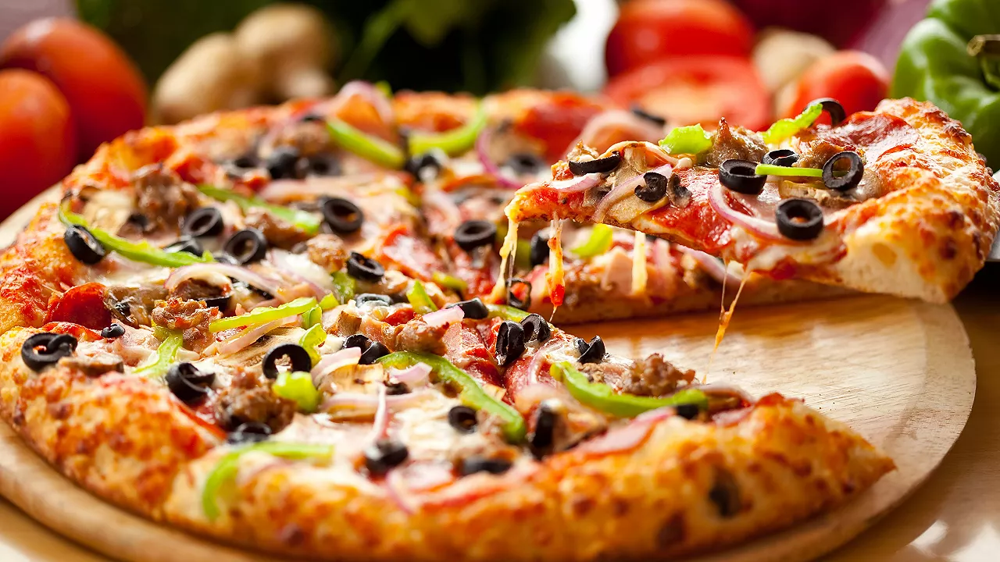

Pizza

Create a slice of heaven with our easy-to-follow pizza recipe, a guaranteed crowd-pleaser for any occasion.
Ingredients:
- Pizza dough
- Tomato sauce
- Mozzarella cheese
- Toppings of your choice (e.g., pepperoni, mushrooms, bell peppers, olives)
- Olive oil
- Dried oregano
- Fresh basil leaves (optional)
- Salt and pepper to taste
Steps:
- Preheat your oven to 475°F (245°C) and place a pizza stone or baking sheet inside to heat up.
- Roll out the pizza dough on a floured surface to your desired thickness.
- Transfer the rolled-out dough to a pizza peel or another baking sheet dusted with cornmeal.
- Spread a thin layer of tomato sauce evenly over the dough, leaving a small border for the crust.
- Sprinkle a generous amount of mozzarella cheese on top of the sauce.
- Add your favorite toppings, distributing them evenly.
- Drizzle a bit of olive oil over the pizza and sprinkle some dried oregano.
- Season with salt and pepper to taste.
- Carefully transfer the pizza to the preheated oven and bake for about 10-15 minutes, or until the crust is golden and the cheese is bubbly and browned.
- Remove the pizza from the oven, garnish with fresh basil leaves if desired, and let it cool for a minute before slicing and serving. Enjoy your homemade pizza!
Return to main page